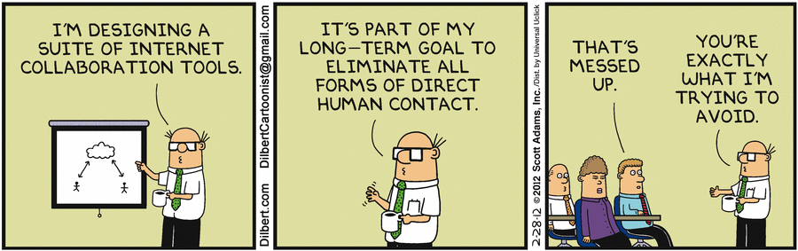
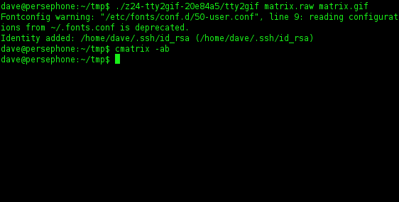

What is Rails?
January 10th, 2016
Ruby is a programming language created by Yukihiro Matusmoto. Ruby is one of the most popular programming languages and that is mostly due to the popularity of Rails. Its popularity stems from its ease of use and uncluttered syntax. Ruby's key feature is RubyGems, a package manager that makes creating and sharing software libraries easier.
Rails is a framework for building websites. It was created by David Heinemeir Hansson, who gave it the name "Ruby on Rails". Rails combines the Ruby programming language with HTML, CSS, and Javascript to create web applications that run on web servers. Ruby is considered a "back end" or "server-side" language because it runs on a web server. Because it is a framework for building websites, Rails establishes conventions for easy maintenance and collaboration. The conventions are defined as the Rails API (application programming interface). It is not necessary to learn the Ruby programming language before learning Rails, but it is highly suggested to be comfortable with the syntax of the language.
Introduction to Ruby Classes
December 23rd, 2015
Classes are the blueprints for defining data as objects. Classes group items together in one unit so they can be easily accessed.Let's say we have a class person. If person is an object, they will have the following: name, age, and gender.
Thee first method, called initialize, is automatically performed whenever we create a new person. This lets us set the state of each object as it is constructed. The characteristics we give our person are the arguments. Each person must have a name, age, and gender. We store this state of instance variables with an @ sign inside the object.
The Enumerable #map Method
December 13th, 2015
The word enumerable means that an object can be enumerated, which means to list or count in succession. Enumerables provide collection classes with traversal and searching methods and have the ability to sort. For a class to support the Enumerable method, it must include the each method. If max, min, or sort is used, the methods must rely on ordering in the collection.
The map method maps a block of code onto each item in the collection, then returns a new array with the block running once for every element.
A Guide to Ruby Collections- Arrays and Hashes
December 9th, 2015

Ruby comes with two container objects: arrays and hashes. Both are collections used to store and retrieve data. Think of an array as a list, or an ordered collection of objects. You can look up data by using the number that it comes in on the list. For example, what is the first thing on the list? Milk. What is the second? Cereal. Shopping_array[0] would give you "Milk", while shopping_array[1] would give you cereal. We say that it's ordered because each object is indexed:
array_name = [a, b, c, d, e]
Index number [0, 1, 2, 3, 4]
Index number [0, 1, 2, 3, 4]
(Note that the first object in an array has 0)
Here is the syntax to look up a particular object in the above array called array_name:
Array_name .index [2] => c
Array_name .index [2] => c
Think of a hash as a collection of pairs of information. Hashes store ordered objects in pairs called keys and values. You can store any object as a key or value and use the key to call its value. However, each key must be unique. Let's use the shopping list example again. Say you are particularly detailed and wanted to make sure you have exactly the right item. Next to "milk" write "almond". Next to "cereal" write "Panda Puffs". order is not necessarily the most important thing in a hash, it is the pair. For example, shopping_hash["milk"] gives you "almond".
Git-R- Done- Intro to Git and Version Control
December 6th, 2015

What is "version control", and why does it matter? Version control is a way of recording changes to a file or a set of files over time so it is easy to recall certain versions at any time. It allows you to revert files back to a previous state, compare changes/additions over the history of an object, or who modified the file at any point during the project. Many people to choose to copy files into a local directory which is a simple but very error prone method. It is easy to write over the file or copy incorrect files into the directory. What's the solution to this problem you ask? Enter Git! Git is possible the best VCS in the world.
Git is an open-source code management tool built by Linus Torvalds. It allows you to experiment with new ideas without the worry of irreversible damage. The Git Parable. by Tom Preston-Werner is a great resource into getting familiar with Git.
Git is also a great way to share code with others and work on projects with multiple team members. While there are many git hosting sites, we will focus on GitHub. Github is a web-based hosting service for git based software development projects. Github provides free hosting facilities for git repositories, but more importantly provides social networking opportunities that allow developers to share and collaborate. Think about it like facebook for developers. For example, I can follow you on Github to watch your repositories, comment or fork your code, or even ask you to merge my additions onto your coode version via a "pull request". I can browse public repositories and fork them to create a clone and add to my user space. Did I mention that Git is basically the best?
"Welcome to the Matrix...er the Terminal"
December 6th, 2015

The famed Terminal seems like a portal into a geeky kingdom where hackers inhabit, but OS X Terminal (or Powershell if you are a Windows User) is a powerful tool used to interact with your computer. It executes tasks by using simple commands. It is one of the most efficient ways to enhance workflow if you are a developer. Not only that, using the commnad line...it just makes you look really cool. Below is a list of commands commonly used in the Terminal.
cd- Change Directory
cd /- Root of drive
pwd- Print Working Directory
mkdir- Make a Directory
ls- List Directory
touch- Make empty files
mv- Move a File
rm- Remove a file
Those are just a few of the Terminal commands. Check out this great resource for a comprehensive list.